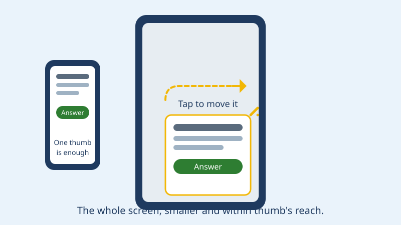

How to Use One-Handed Mode on Your Samsung Galaxy
Amina is 68 years old. One afternoon, she was walking home from the market with a shopping bag in her left hand and her phone in her right. Her daughter called. Amina wanted to answer, and then send a quick message saying she was on her way home. But her phone is a big one, and the buttons she needed were at the top of the screen, far from her thumb. She had to stop, put the bag down on a wall, and use both hands — while the phone kept ringing.
There is a better way, and it is already on her phone. It is called One-Handed Mode. When you switch it on, the whole screen shrinks down to a smaller window, low on the screen, so every button is within reach of the thumb of the hand holding the phone. You can answer a call, type a message, or open an app with one hand, and the shopping bag stays in the other. This guide shows you how to switch it on, how to use it, and how to switch it off again.

What One-Handed Mode is, in plain words
Galaxy phones have grown bigger over the years. A bigger screen is lovely for photos and videos, but it has one problem: the top of the screen is a long way from your thumb when you hold the phone in one hand. The back button, the search box, the send button, the menu — all of these often sit at the top, and reaching them means stretching your thumb, or shuffling the phone in your hand, or using your second hand.
One-Handed Mode fixes this by making the whole screen smaller for a while. Imagine the screen as a picture on a wall. One-Handed Mode takes that picture off the wall and puts it on a low table, smaller, in one corner. Everything is still there — your apps, your messages, your buttons — just smaller, and lower down, where your thumb can reach it. When you are done, one tap brings the screen back to full size.
It is not a different phone, and it does not change anything permanently. It is a helper you can switch on when you need it — when you are carrying a bag, holding a grandchild's hand, standing in a bus, or sitting with a cup of tea — and switch off again when you have both hands free. You can also choose which side the small screen sits on, left or right, to match the hand you are holding the phone with.
There are two ways to switch it on. The quick way is a gesture — a short swipe or a double tap — and it works in seconds, once it is set up. The other way is through Settings, which is where you choose the gesture and the side. This guide shows you both, starting with the setup in Settings, because that is where you choose how you want it to work.
Before you start — two quick checks
Do these two things before you begin. They take one minute, and they save you confusion later.
- Know which hand you usually hold the phone with. Most people hold the phone in their right hand, and use their right thumb. Some people hold it in their left hand. One-Handed Mode lets you choose the side, so think about which hand is holding the phone when you need it. If you carry your shopping bag in your left hand, you hold the phone in your right, and you want the small screen on the right side. You can change the side later, in seconds, so do not worry about getting it wrong.
- Know how you move around your phone. There are two ways to move around a Galaxy phone: buttons at the bottom of the screen (three buttons: back, home, and recent apps), or gestures (swiping up from the bottom edge, with no buttons showing). Which one you use changes how you switch One-Handed Mode on with the quick gesture. If you are not sure which one you use, look at the bottom of your screen. If you see three buttons there, you use buttons. If you see a thin line at the bottom and no buttons, you use gestures. This guide covers both, and tells you which steps are for which.
Now you are ready. The first part is the setup, done once in Settings. After that, switching it on takes one second.
Step 1: Switch One-Handed Mode on in Settings
This is the one-time setup. You switch the feature on here, and you choose the gesture that will turn it on in future. After this, you will hardly ever need to come back to Settings.
- Open Settings. Look for the app with the gear symbol, usually called "Settings". If you cannot find it, swipe up from the bottom of the home screen to see all your apps, and look for the gear symbol there.
- Find "One-handed mode". The words may be in a different place on your phone, because Samsung moves menus between One UI versions. Try looking for "General management" first, then look for "One-handed mode" inside it. On some phones, it is under "Advanced features" instead. If you cannot find it either way, use the search box at the top of the Settings screen: tap the search box, type "One-handed mode", and tap the result. The search box is the quickest way, and it works on every Galaxy phone. Read How to Make the Text on Your Galaxy Bigger and Easier to Read if the words on the screen are hard to read.
- Switch it on. Tap the switch beside "One-handed mode", so it turns on. A new screen will open with the choices for how to use it.
- Choose the gesture. You will see a choice, usually between two ways to switch it on: swiping down from the bottom edge, or double-tapping the Home button. If your phone uses gestures (no buttons at the bottom), choose the swipe: it is usually called something like "Gesture" and means swiping down from the bottom edge of the screen. If your phone uses the three buttons at the bottom, choose the double tap: it is usually called "Button" and means tapping the Home button twice, quickly. Pick the one that matches how your phone works. If you pick the wrong one, come back here and change it — nothing is locked in.
- Choose the side. You may also see a choice of left or right. Pick the side of the hand you hold the phone with. Right-handed people usually pick right, and left-handed people usually pick left. You can change this any time, even while One-Handed Mode is on, as you will see below.
That is the setup done. One-Handed Mode is now ready. It will not do anything until you use the gesture, so your screen will look exactly as it did before. The next section shows you how to switch it on when you need it.
Step 2: Switch One-Handed Mode on when you need it
Use the gesture you chose in Step 1. There are two versions, depending on how your phone moves around.
If your phone uses gestures (no buttons at the bottom):
- Place your thumb at the bottom edge of the screen, in the middle. Rest your thumb just above the thin line at the very bottom of the screen.
- Swipe down, in one short, quick movement. Drag your thumb downwards a short way — about the length of your thumbnail — and lift it off. Do not swipe all the way up, and do not swipe slowly. It is a short, quick pull downwards.
- Watch the screen shrink. The whole screen should shrink into a smaller window, sitting in the bottom corner of the screen. The rest of the screen goes dark around it. You are now in One-Handed Mode. Everything inside the small window works exactly as normal — tap buttons, type, scroll — just smaller and within reach.
If your phone uses the three buttons at the bottom:
- Find the Home button. It is the round or pill-shaped button in the middle of the three buttons at the bottom of the screen.
- Tap it twice, quickly. Tap, tap — two quick taps, like knocking twice on a door. Do not press and hold it; a long press opens something else, usually the voice assistant.
- Watch the screen shrink. The whole screen should shrink into a smaller window in the bottom corner, just as above.
If nothing happens the first time, try again, a little faster or a little slower. The gesture takes a bit of practise, and most people get it on the second or third try. If it still does not work, go back to Settings and check that One-Handed Mode is switched on, and that you chose the gesture that matches your phone — the swipe for gesture phones, the double tap for button phones. Choosing the wrong one is the most common reason the gesture does nothing.
Step 3: Use the small screen
Once the screen has shrunk, use it exactly as you would use the full screen. Tap the buttons, type your message, scroll through your photos. The only difference is that everything is smaller and lower down, so your thumb can reach the top of the small window without stretching.
Here are the things you can do inside the small screen:
- Tap anything, as normal. Buttons, messages, photos, apps — all of them work. A tap inside the small window is a tap, just like on the full screen.
- Type with one thumb. The keyboard also shrinks, and sits inside the small window. You can type a message with the thumb of the hand holding the phone, while the other hand is busy.
- Scroll inside the window. Swipe up and down inside the small window to scroll, the same as usual. The window stays where it is; only the content inside it moves.
- Open an app from the home screen. If you shrink the screen while you are on the home screen, you can tap an app icon inside the small window, and the app will open inside it, still small.
Take your time the first few times. The small screen feels strange at first, because everything is in a different place than you expect. After a day or two, your thumb learns where things are, and it feels natural.
Step 4: Move the small screen to the other side
Sometimes you change hands — you put the shopping bag down and pick the phone up in your other hand, for example. You do not need to go back to Settings. You can move the small screen to the other side while it is on the screen.
- Look for the arrow at the top of the small window. At the top edge of the small screen, on the outer side, there is a small arrow, or a small handle. It usually points left or right, depending on which side the window is on now.
- Tap the arrow. Tap it once. The small window will jump to the other side of the screen — from the bottom right corner to the bottom left corner, or the other way round.
- Carry on. Everything inside the window stays exactly as it was. Only its position has changed.
If you cannot find the arrow, look carefully at the top corners of the small window. On some phones, the arrow is small and easy to miss, and on some it is a small triangle. If you still cannot find it, switch One-Handed Mode off, change hands, and switch it on again — it will come back on the side you last chose in Settings.
Step 5: Make the small screen bigger or smaller
The small screen has a size that suits most people, but you can change it. If your hands are small, or the buttons feel too tiny, make the window bigger. If you have long thumbs and the window feels too big, make it smaller.
- Look for the small handle at the top corner of the window. At the top edge of the small screen, there is a small handle or grip — sometimes it looks like two small lines, sometimes like a small dot. It sits at the top of the window, on the side away from the edge of the screen.
- Drag the handle. Press your thumb on the handle and drag it up or down. Dragging it up makes the window bigger; dragging it down makes it smaller. Let go when the size feels comfortable.
- Try it for a day. The size you pick stays until you change it again. If you make it bigger and then find your thumb cannot reach the top again, drag it a little smaller. Most people settle on a size after one or two tries.
If you cannot find the handle, do not worry — the standard size works well for most people, and you do not need to change it. The size setting is a nice extra, not something you must do.
Step 6: Switch One-Handed Mode off again
When you have both hands free again, bring the screen back to full size. There are three ways, and they all work.
- Tap the dark area. The easiest way: tap anywhere on the dark part of the screen, outside the small window. One tap, and the screen springs back to full size.
- Use the gesture again. Do the same gesture you used to switch it on — swipe down from the bottom edge, or double-tap the Home button. The screen goes back to full size.
- Wait. If you put the phone down and do nothing for a while, One-Handed Mode will switch itself off after some time, and the next time you wake the phone, the screen will be full size again.
Switching it off does not switch the feature off in Settings. It is still there, ready for the next time you need it. One gesture, and it is back. That is the whole point: it is there when you need it, and gone when you do not.
Using One-Handed Mode with one hand on the bus, in the kitchen, and at the shops
One-Handed Mode is most useful in the moments when your other hand is busy. Here are the everyday moments when it helps most.
- Answering a call while carrying a bag. When the phone rings, swipe down to shrink the screen, then tap the green answer button, which is now within reach of your thumb. You can hold the call the same way, with the phone to your ear and the bag still in your other hand.
- Sending a quick message while walking. Shrink the screen, open your messages, and type with one thumb. The keyboard is smaller, but so is the distance your thumb has to travel. Keep your messages short — "On my way home" is enough — and finish the longer ones when you sit down.
- Checking a shopping list in the shop. Open your list, shrink the screen, and hold the phone in one hand while you pick things up with the other. The list stays visible in the small window, and you can tick things off with your thumb.
- Looking something up while holding a grandchild's hand. Your other hand is busy holding a small hand, so it cannot help with the phone. One-Handed Mode lets you search, look at a photo, or check a message without letting go.
- Cooking, with one hand on the spoon. Shrink the screen to read a recipe, or set a timer, while the other hand stirs. Just keep the phone away from the steam and the water.
In all of these moments, the rule is the same: use One-Handed Mode for short, quick jobs. For long jobs — reading a whole article, watching a video, writing a long message — put the phone down, or use both hands, and switch the screen back to full size. Your eyes will thank you, and so will your thumb.
One-Handed Mode and the keyboard
When the screen shrinks, the keyboard shrinks with it, and sits at the bottom of the small window. For many people, this smaller keyboard is easier to use with one thumb than the full-size keyboard, because the keys are closer together and your thumb does not have to travel so far.
But the smaller keyboard has its own tricks. The keys are smaller, so it is easier to tap the wrong letter. Here are three things that help:
- Type slowly the first few times. Speed comes later. A slow, correct message is better than a fast message full of wrong letters.
- Let the phone suggest words. Above the keyboard, the phone suggests words as you type. If the word you want appears there, tap it instead of typing the whole word. It saves taps, and it saves mistakes.
- Try voice typing for longer messages. If a message is more than a few words, tap the small microphone symbol on the keyboard and speak the message instead. The phone types what you say. Read How to Type with Your Voice on Your Galaxy Keyboard for the full steps.
If the keyboard feels too small even after a few days, make the One-Handed Mode window bigger, as shown in Step 5. A bigger window means a bigger keyboard. And remember: you can always switch One-Handed Mode off and type with both hands when you have them free. One-Handed Mode is for when you do not.
Practise with Amina
Let us practise with Amina. She is walking home from the market with a bag in her left hand and her phone in her right. Her daughter calls. Amina holds the phone in her right hand, places her thumb at the bottom edge of the screen, and swipes down, quick and short. The screen shrinks into a small window in the bottom right corner. The green answer button is right there, under her thumb. She taps it and says, "Hello, I am on my way home."
After the call, she wants to send a message. The screen is still small. She taps the messages app inside the small window, types "On my way home, see you soon" with her right thumb, and taps send. Then she taps the dark area outside the window, and the screen springs back to full size. She puts the phone in her pocket, picks up her bag properly, and walks on. The whole thing took less than a minute, and she never had to put the bag down.
Now try it yourself, sitting down, with both hands free. Switch it on in Settings first, then try the gesture three or four times, until the screen shrinks when you want it to. Try tapping a few buttons inside the small window. Try moving it to the other side. Then tap the dark area to bring it back. Practise while you are sitting comfortably, so that when you really need it — bag in one hand, phone ringing — your thumb already knows what to do.
Common mistakes
- Choosing the wrong gesture in Settings. If your phone uses gestures (no buttons at the bottom) but you chose the double-tap, or your phone uses buttons but you chose the swipe, the gesture will do nothing. Go back to Settings, look for "One-handed mode", and choose the one that matches your phone.
- Swiping too slowly, or too far. The swipe to switch it on is short and quick — about the length of your thumbnail. A long, slow swipe does something else: it may open the recent apps, or pull down the notification shade. Practise the short, quick pull.
- Pressing and holding the Home button instead of double-tapping. A long press on the Home button opens the voice assistant, not One-Handed Mode. Two quick taps, like knocking twice, is what you want.
- Thinking the phone is broken when the screen shrinks. The first time the screen shrinks by accident, it can look alarming — as if the phone has gone wrong. It has not. One tap on the dark area brings it straight back. If it happens often by accident, you can switch the feature off in Settings until you want it.
- Trying to do everything in the small window. One-Handed Mode is for short, quick jobs. Reading a long article or watching a video in the small window is hard on the eyes. Switch back to full size for long jobs.
- Forgetting which side the window is on. If you change hands and the window is on the wrong side, your thumb has to stretch across the screen again. Tap the arrow at the top of the window to move it to the other side.
- Typing too fast on the small keyboard. The keys are smaller, so fast typing makes more mistakes. Slow down, use the word suggestions, or use voice typing for longer messages.
- Switching it on and then forgetting how to switch it off. Just tap the dark area outside the small window. That is the easiest way, and it always works.
Frequently asked questions
Does One-Handed Mode change anything on my phone permanently?
No. It only makes the screen smaller for a while. Your apps, photos, messages, and settings are all exactly the same. When you switch it off, the screen goes back to full size, and nothing has changed. You can switch it on and off as often as you like.
Why does nothing happen when I swipe down?
Usually one of three things: One-Handed Mode is switched off in Settings, you chose the wrong gesture in Settings, or the swipe was too long or too slow. Open Settings, search for "One-handed mode", check that it is switched on, and check that the gesture you chose matches your phone — the swipe for gesture phones, the double tap for button phones. Then practise the short, quick swipe again. Read How to Update Your Galaxy Safely if your phone is very old and the feature is not there at all — on very old models, One-Handed Mode may be missing, or in a different place.
Can I use One-Handed Mode with the buttons at the bottom, or only with gestures?
Both. If your phone shows three buttons at the bottom, you switch it on by double-tapping the Home button. If your phone uses gestures, you switch it on by swiping down from the bottom edge. You choose which one in Settings, under "One-handed mode". If you change from buttons to gestures later, come back and change the choice here too.
Does the small screen work in every app?
Almost every app works inside the small window — messages, calls, photos, the internet, WhatsApp, and the home screen. A few apps, usually games and some video apps, may not shrink, and may stay full size. That is normal. If an app does not shrink, just use it at full size, and shrink the screen again when you go back to another app.
Can I make the small screen stay on for longer?
One-Handed Mode stays on until you switch it off by tapping the dark area, or using the gesture again, or until the phone goes to sleep. It does not switch itself off while you are using it. If you stop using the phone for a while and the screen goes dark, the next time you wake the phone, the screen will be full size again.
Is One-Handed Mode the same as the one-handed keyboard?
No, but they are cousins. One-Handed Mode shrinks the whole screen, including the keyboard. The one-handed keyboard only shrinks the keyboard, and leaves the rest of the screen full size. You can use either one, or both together. If you only struggle with typing, and the rest of the screen is fine, the one-handed keyboard on its own may be enough — look for it in the keyboard settings. If you struggle to reach the top of the screen as well, use One-Handed Mode.
Will it drain my battery faster?
No. One-Handed Mode does not use any extra battery worth worrying about. It is just showing the same screen smaller. It does not run anything extra in the background. Read How to Make Your Galaxy Battery Last Longer if your battery runs down quickly for other reasons.
I shrank the screen by accident. How do I stop it happening?
Tap the dark area to bring the screen back, then open Settings, search for "One-handed mode", and switch it off. It will not shrink again until you switch it back on. If you like the feature but trigger it by accident, try the other gesture — the double tap instead of the swipe, or the swipe instead of the double tap — because one of them may suit your hands better than the other.
If the words on your screen look different
Menu words may look a little different on your phone. That is normal. Samsung makes many Galaxy models — A-series and S-series — and they do not all show the exact same words. Your phone company, called a carrier, can also change some words, and so can your country or region. And your One UI version matters. In November 2026, some phones use One UI 8, some use One UI 8.5, and some use One UI 9. That is why this guide tells you to look for "One-handed mode", "General management", "Advanced features", "Gesture", and "Button", instead of one fixed set of words.
If you cannot find "One-handed mode" at all, open Settings, tap the search box at the top, and type "One-handed mode". The search box will find it, whatever menu it sits under on your phone. And if the search finds nothing, your phone may be an older model where the feature is called something slightly different, or where it sits under a different menu — ask a family member to look with you, or check that your phone is up to date.